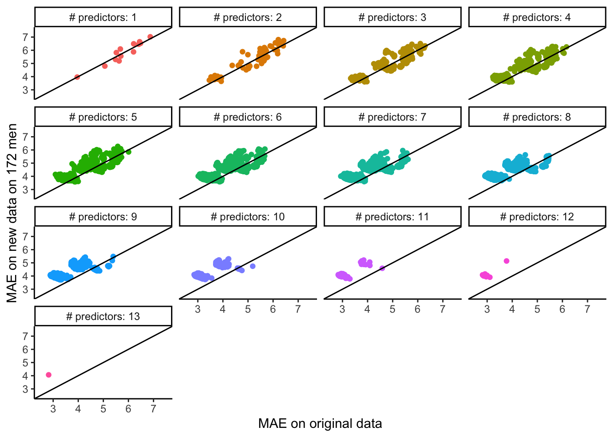

Topic 2 Evaluating Regression Models
Learning Goals
- Create and interpret residuals vs. fitted, residuals vs. predictor plots to identify improvements in modeling and address ethical concerns
- Interpret MSE, RMSE, MAE, and R-squared in a contextually meaningful way
We’ll also start to develop some new ideas relating to our next topics.
Slides from today are available here.
Exercises
You can download a template RMarkdown file to start from here.
Context
We’ll be working with a dataset containing physical measurements on 80 adult males. These measurements include body fat percentage estimates as well as body circumference measurements.
fatBrozek: Percent body fat using Brozek’s equation: 457/Density - 414.2fatSiri: Percent body fat using Siri’s equation: 495/Density - 450density: Density determined from underwater weighing (gm/cm^3).age: Age (years)weight: Weight (lbs)height: Height (inches)neck: Neck circumference (cm)chest: Chest circumference (cm)abdomen: Abdomen circumference (cm)hip: Hip circumference (cm)thigh: Thigh circumference (cm)knee: Knee circumference (cm)ankle: Ankle circumference (cm)biceps: Biceps (extended) circumference (cm)forearm: Forearm circumference (cm)wrist: Wrist circumference (cm)
It takes a lot of effort to estimate body fat percentage accurately through underwater weighing. The goal is to build the best predictive model for fatSiri using just circumference measurements, which are more easily attainable. (We won’t use fatBrozek or density as predictors because they’re other outcome variables.)
(If you have not already installed the tidymodels package, install it by running install.packages("tidymodels") in the Console.)
library(readr)
library(ggplot2)
library(dplyr)##
## Attaching package: 'dplyr'## The following objects are masked from 'package:stats':
##
## filter, lag## The following objects are masked from 'package:base':
##
## intersect, setdiff, setequal, unionlibrary(tidymodels)## ── Attaching packages ────────────────────────────────────────────────────────────── tidymodels 1.0.0 ──## ✔ broom 1.0.3 ✔ rsample 1.1.1
## ✔ dials 1.1.0 ✔ tibble 3.1.8
## ✔ infer 1.0.4 ✔ tidyr 1.3.0
## ✔ modeldata 1.0.1 ✔ tune 1.0.1
## ✔ parsnip 1.0.3 ✔ workflows 1.1.2
## ✔ purrr 1.0.1 ✔ workflowsets 1.0.0
## ✔ recipes 1.0.4 ✔ yardstick 1.1.0## ── Conflicts ───────────────────────────────────────────────────────────────── tidymodels_conflicts() ──
## ✖ purrr::discard() masks scales::discard()
## ✖ dplyr::filter() masks stats::filter()
## ✖ dplyr::lag() masks stats::lag()
## ✖ yardstick::spec() masks readr::spec()
## ✖ recipes::step() masks stats::step()
## • Dig deeper into tidy modeling with R at https://www.tmwr.orgtidymodels_prefer()
bodyfat <- read_csv("https://www.dropbox.com/s/js2gxnazybokbzh/bodyfat_train.csv?dl=1")## Rows: 80 Columns: 17## ── Column specification ────────────────────────────────────────────────────────────────────────────────
## Delimiter: ","
## dbl (17): fatBrozek, fatSiri, density, age, weight, height, neck, chest, abd...
##
## ℹ Use `spec()` to retrieve the full column specification for this data.
## ℹ Specify the column types or set `show_col_types = FALSE` to quiet this message.# Remove the fatBrozek and density variables
bodyfat <- bodyfat %>%
select(-fatBrozek, -density)Class investigations
We’ll work through this section together to review concepts and code. You’ll then work on the remainder of the exercises in your groups.
# Exploratory plots
# Univariate distribution of outcome
ggplot(bodyfat, aes(???)) +
geom_???()
# Scatterplot of fatSiri vs. weight
ggplot(bodyfat, aes(???)) +
geom_???()Let’s fit a linear regression model using tidymodels to predict body fat percentage from weight.
lm_spec <-
linear_reg() %>%
set_engine(engine = "lm") %>%
set_mode("regression")mod1 <- fit(lm_spec,
?? ~ ??,
data = bodyfat)
mod1 %>% tidy()We can use the predict() function to use our fit model to predict the outcome based on values in our original data. We can calculate residuals by taking our true outcome values and subtracting the predicted value, stored as .pred.
mod1_output <- mod1 %>%
predict(new_data = bodyfat) %>%
bind_cols(??) %>%
mutate(resid = ?? - ??)
head(mod1_output)We can use this data frame to compute error metrics by hand or by using functions from the yardstick package.
# MSE - what is the interpretation with units?
mod1_output %>%
summarize(mean(resid^2))# RMSE - what is the interpretation with units?
mod1_output %>%
summarize(sqrt(mean(resid^2)))
mod1_output %>%
rmse(truth = ??, estimate = .pred)# MAE - what is the interpretation with units?
mod1_output %>%
summarize(mean(abs(resid)))
mod1_output %>%
mae(truth = ??, estimate = .pred)# R-squared - interpretation? (unit-less)
mod1_output %>%
summarize(1 - (var(resid) / var(fatSiri)))
mod1_output %>%
rsq(truth = ??, estimate = .pred)…and to create residual plots:
# Residuals vs. predictions
ggplot(mod1_output, aes(x = .pred, y = resid)) +
geom_point() +
geom_smooth() +
geom_hline(yintercept = 0, color = "red") +
theme_classic()
# Residuals vs. predictors (x's)
ggplot(mod1_output, aes(x = height, y = resid)) +
geom_point() +
geom_smooth() +
geom_hline(yintercept = 0, color = "red") +
theme_classic()Exercise 1
First decide on what you think would be a good model by picking variables based on context. Fit this model, calling it mod_initial. (Remember that you can include several predictors with a + in the model formula - like y ~ x1+x2.)
# Code to fit initial modelUse residual plot explorations to check if you need to update your model.
# Residual plot explorationsFit your updated model, and call it model_updated.
# Code to fit updated modelExercise 2
Compute and contextually interpret relevant evaluation metrics for your model.
# Code to compute evaluation metricsExercise 3
Now that you’ve selected your best model, deploy it in the real world by applying it to a new set of 172 adult males. You’ll need to update the new_data to use bodyfat_test instead of bodyfat.
bodyfat_test <- read_csv("https://www.dropbox.com/s/7gizws208u0oywq/bodyfat_test.csv?dl=1")Compare your evaluation metrics from Exercise 2 the metrics here. What do you notice? (Note: this observation is just based on your one particular fitted model. You’ll make some more comprehensive observations in the next exercise.)
In general, do you think that models with more or fewer variables would perform better in this comparison? Explain.
Exercise 4
The code below systematically looks at the same comparison that you made in Exercise 3 but for every possible linear regression model formed from inclusion/exclusion of the predictors (without transformations or interactions). See the plot below for the results.
Note: You can try to run the code to make a plot of the results of this systematic investigation (it might take several minutes). Feel free to inspect the code if you’re curious, but otherwise, don’t worry about understanding it fully.
What do you notice? What do you wonder?
# This helper function computes MAE on the supplied datasets
get_maes <- function(mod, train_data, test_data) {
mod_output_train <- bind_cols(train_data, predict(mod, new_data = train_data))
mod_output_test <- bind_cols(test_data, predict(mod, new_data = test_data))
train_mae <- mod_output_train %>% mae(truth = fatSiri, estimate = .pred) %>% pull(.estimate)
test_mae <- mod_output_test %>% mae(truth = fatSiri, estimate = .pred) %>% pull(.estimate)
c(train_mae, test_mae)
}
# Get just the possible PREDICTOR variables by taking all variables
# and removing the fatSiri and hipin variables
# hipin is hip circumference in inches (redundant with the hip variable)
possible_predictors <- setdiff(colnames(bodyfat), c("fatSiri", "hipin"))
# This code loops through all models (run time can be long)
results <- bind_rows(lapply(1:13, function(i) {
combos <- combn(possible_predictors, i)
bind_rows(lapply(seq_len(ncol(combos)), function(j) {
form <- paste("fatSiri ~", paste(combos[,j], collapse = "+"))
mod <- fit(lm_spec, as.formula(form), data = bodyfat)
maes <- get_maes(mod = mod, train_data = bodyfat, test_data = bodyfat_test)
tibble(
form = form,
train_mae = maes[1],
test_mae = maes[2],
num_predictors = i
)
}))
}))
# I save the results so that I don't have to rerun the code above
save(results, file = "allsubsets.rda") load("allsubsets.rda")
# Relabel the categories (levels) of the num_predictors variable
results <- results %>%
mutate(num_predictors = factor(paste("# predictors:", num_predictors), levels = paste("# predictors:", 1:13)))
# Plot results
results %>%
ggplot(aes(x = train_mae, y = test_mae, color = num_predictors)) +
geom_point() +
coord_cartesian(xlim = c(2.5,7.5), ylim = c(2.5,7.5)) +
geom_abline(slope = 1, intercept = 0) +
facet_wrap(~ num_predictors) +
guides(color = "none") +
labs(x = "MAE on original data", y = "MAE on new data on 172 men") +
theme_classic()